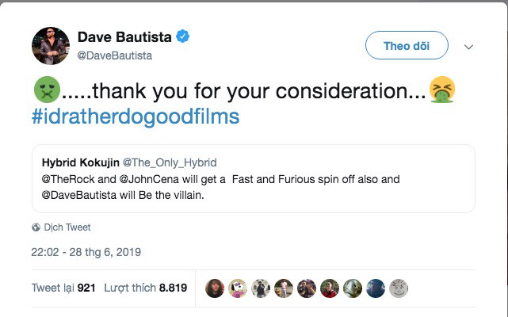
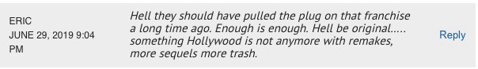
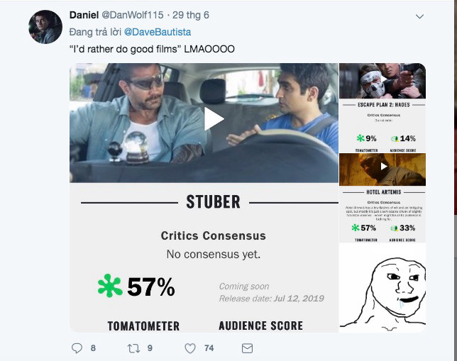
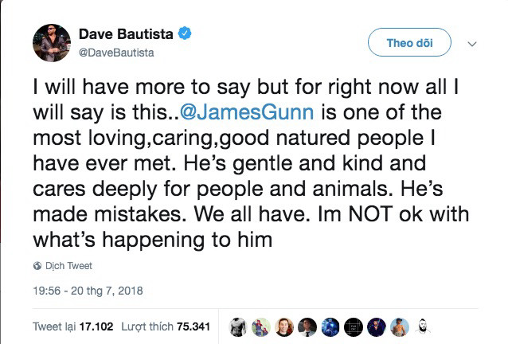

DRAMA!! Dave Bautista 'đá đểu' Fast and Furious trên Twitter
 Ha Quoc Viet
Ha Quoc Viet
 Ngày 30/6 vừa qua, Dave Bautista đã có những bình luận không mấy thiện chí dành cho franchise Fast and Furious khi được người hâm mộ nhắc tới chuỗi phim này trên Twitter cá nhân của anh.
Ngày 30/6 vừa qua, Dave Bautista đã có những bình luận không mấy thiện chí dành cho franchise Fast and Furious khi được người hâm mộ nhắc tới chuỗi phim này trên Twitter cá nhân của anh.
Cụ thể, khi có thông tin về việc người hùng WWE John Cena sẽ có mặt trong phần 9 của
Fast and Furious, một khán giả đã gợi ý Dave Bautista tham gia vào bộ phim, và có thể là một vai phản diện. Rất nhanh chóng, ngôi sao
Guardians of the Galaxy đáp trả: “Cảm ơn bạn đã cân nhắc" kèm theo 2 emoji nôn mửa và dòng hashtag đầy mỉa mai: “Tôi thích làm các bộ phim hay hơn".

Trước thái độ không mặn mà của Dave với Fast and Furious, phản ứng của khán giả cũng khá trái chiều. Một phía, nhiều người cho rằng đây là một lời mỉa mai hài hước và tỏ ra đồng tình với sự đi xuống trong chất lượng của franchise này. Ngược lại, có những người cho rằng đây là sự công kích không cần thiết, thậm chí là phản ứng khá gay gắt với thái độ của của Dave.


Dave Bautista nổi tiếng là người thẳng thắn trên mạng xã hội. Trước đó, anh cũng từng chỉ trích Disney dữ dội khi hãng này quyết định sa thải James Gunn vì những bê bối trên Twitter năm 2018. Với thái độ không mấy tích cực lần này của Dave với Fast and Furious, khả năng anh tham gia vào bộ phim sẽ là rất thấp. Các dự án “phim hay hơn” mà Dave Bautista sẽ góp mặt trong thời gian tới bao gồm:
Stuber ra mắt cuối tháng 7,
My Spy vào tháng 8, và cả
Blade Runner 2020 dự kiến trình làng vào tháng 11 năm sau.

Về phía
Fast and Furious, sau 8 phần và một phim chuẩn bị ra mắt là
Hobbs and Shaw, đến thời điểm hiện tại, đây vẫn là franchise hiếm hoi dành được sự yêu mến của phần đông khán giả. Phần 9 của phim cũng mới được bấm máy trong tuần trước và dự kiến sẽ đến với khán giả vào tháng 4/2020. Những ngôi sao đã xác nhận sẽ tham gia
Fast and Furious 9 bao gồm trụ cột Vin Diesel và John Cena, được kỳ vọng là sẽ phá vỡ thế độc tôn tại phòng vé của Disney trong suốt một quãng thời gian dài.